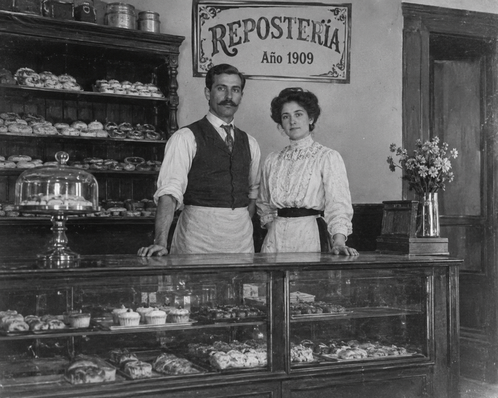

Los inicios
ㅤ En 1909 los bisabuelos, María y Mario, dieron vida a su sueño; crear una repostería donde cada postre estuviera hecho con amor, dedicación y tradición. Con sus resetas caseras y el cariño con el que recibían a cada cliente, construyeron mucho más que un negocio; hicieron un lugar lleno de aromas, encuentros y recuerdos. Hoy, su legado sigue vivo, manteniendo intacta la esencia de aquellos dos amantes que transformaron su pasión por la repostería en una tradición familiar.

Nuestros valores
- Es muy importante para nosotros ser siempre honestos y amables.
- Tratamos a todos nuestros clientes con igualdad y sin discriminación.
- El respeto es lo primero.